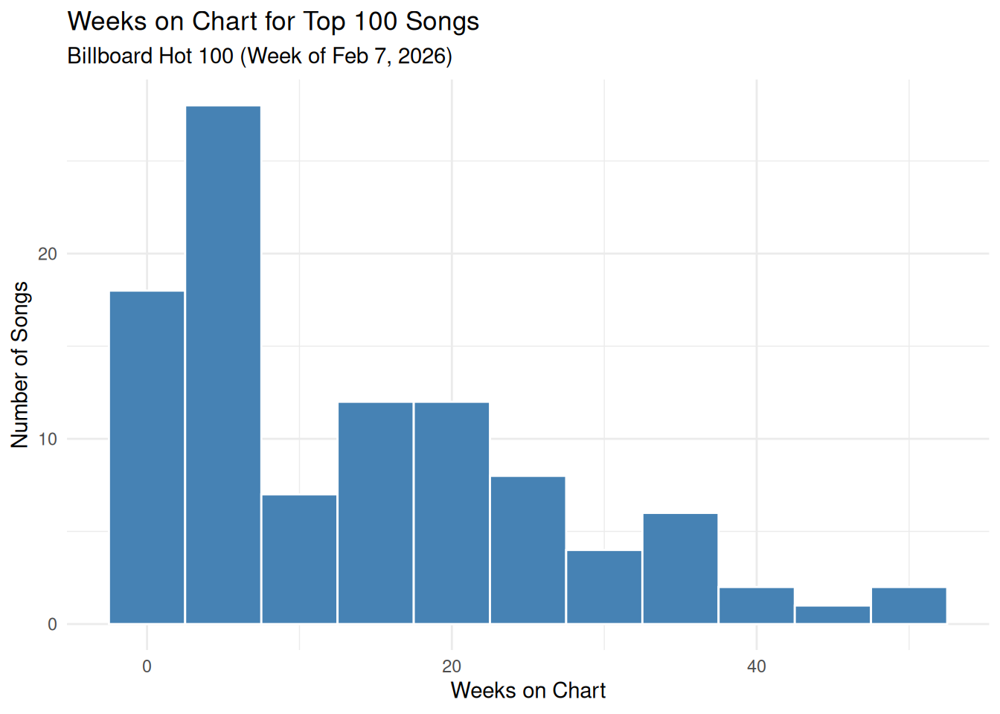

library(tidyverse)
billboard <- read_csv("data/billboard_2026_data.csv")Project
Project
First 100 Songs
billboard |>
slice_head(n = 100) |>
print(n = 100)# A tibble: 100 × 7
Week Rank Song Artist Last_Week Peak Weeks_on_Chart
<date> <dbl> <chr> <chr> <chr> <dbl> <dbl>
1 2026-02-07 1 Aperture Harry… - 1 1
2 2026-02-07 2 Choosin' Texas Ella … 6 2 15
3 2026-02-07 3 Man I Need Olivi… 2 2 23
4 2026-02-07 4 Golden HUNTR… 4 1 32
5 2026-02-07 5 The Fate Of Ophelia Taylo… 3 1 17
6 2026-02-07 6 I Just Might Bruno… 1 1 3
7 2026-02-07 7 Ordinary Alex … 5 1 50
8 2026-02-07 8 Back To Friends sombr 7 7 44
9 2026-02-07 9 Folded Kehla… 8 6 33
10 2026-02-07 10 Opalite Taylo… 10 2 17
11 2026-02-07 11 End Of Beginning Djo 9 6 26
12 2026-02-07 12 Mutt Leon … 11 6 51
13 2026-02-07 13 Where Is My Husband! RAYE 13 13 18
14 2026-02-07 14 What You Saying Lil U… 12 12 5
15 2026-02-07 15 I Got Better Morga… 14 7 33
16 2026-02-07 16 So Easy (To Fall In … Olivi… 17 14 18
17 2026-02-07 17 20 Cigarettes Morga… 18 15 36
18 2026-02-07 18 Daisies Justi… 15 2 28
19 2026-02-07 19 Die On This Hill Sienn… 20 19 6
20 2026-02-07 20 wgft Gunna… 16 16 25
21 2026-02-07 21 Sleepless In A Hotel… Luke … 21 17 3
22 2026-02-07 22 Plastic Cigarette Zach … 19 13 3
23 2026-02-07 23 Tit For Tat Tate … 25 3 18
24 2026-02-07 24 It Depends Chris… 22 16 26
25 2026-02-07 25 Nice To Meet You Myles… 26 25 33
26 2026-02-07 26 Better Me For You (B… Max M… 29 26 33
27 2026-02-07 27 Amen Shabo… 35 27 38
28 2026-02-07 28 Hell At Night BigXt… 28 26 25
29 2026-02-07 29 Gabriela KATSE… 27 21 28
30 2026-02-07 30 Stateside PinkP… 39 30 4
31 2026-02-07 31 Yukon Justi… 31 17 29
32 2026-02-07 32 A Couple Minutes Olivi… 30 26 14
33 2026-02-07 33 4 Raws EsDee… 32 28 7
34 2026-02-07 34 The Fall Cody … 36 34 18
35 2026-02-07 35 House Again Hudso… 42 33 41
36 2026-02-07 36 Lush Life Zara … 40 36 7
37 2026-02-07 37 How Far Does A Goodb… Jason… 46 37 16
38 2026-02-07 38 Favorite Country Song HARDY 45 38 14
39 2026-02-07 39 Days Like These Luke … 48 39 14
40 2026-02-07 40 Stay Here 4 Life A$AP … 23 23 2
41 2026-02-07 41 Purple Rain Princ… 38 2 22
42 2026-02-07 42 Is It A Crime Maria… 43 27 25
43 2026-02-07 43 Chanel Tyla 52 43 7
44 2026-02-07 44 I Thought I Saw Your… She &… 47 40 8
45 2026-02-07 45 Say Why Zach … 44 25 3
46 2026-02-07 46 12 To 12 sombr 49 41 24
47 2026-02-07 47 When Did You Get Hot? Sabri… 57 17 20
48 2026-02-07 48 ErrTime Cardi… 61 43 18
49 2026-02-07 49 FDO Pooh … 41 12 7
50 2026-02-07 50 I Ain't Coming Back Morga… 60 8 33
51 2026-02-07 51 Gone Gone Gone David… 58 51 9
52 2026-02-07 52 Who Knows Danie… 67 52 5
53 2026-02-07 53 Brunette Tucke… 69 53 5
54 2026-02-07 54 Beautiful Things Megan… 55 54 9
55 2026-02-07 55 You Stole The Show Sienn… 64 55 4
56 2026-02-07 56 It Won't Be Long Georg… 79 56 4
57 2026-02-07 57 Bruce Wayne Young… 63 57 2
58 2026-02-07 58 Travelin' Soldier Cody … 53 12 12
59 2026-02-07 59 How It's Done HUNTR… 66 8 27
60 2026-02-07 60 Dracula Tame … 70 30 18
61 2026-02-07 61 Bloodline Alex … 72 32 18
62 2026-02-07 62 Helicopter A$AP … 24 24 2
63 2026-02-07 63 ATM Don T… - 63 1
64 2026-02-07 64 Mrs. Trendsetter Lil B… 93 64 2
65 2026-02-07 65 Nice To Each Other Olivi… 77 65 14
66 2026-02-07 66 Change My Mind Riley… - 66 1
67 2026-02-07 67 Shot Callin Young… 71 43 20
68 2026-02-07 68 Wish I Didn't Megan… 51 51 2
69 2026-02-07 69 Midnight Sun Zara … 82 69 2
70 2026-02-07 70 Bittersweet Madis… 68 68 3
71 2026-02-07 71 Ain't A Bad Life Thoma… - 71 1
72 2026-02-07 72 Let Alone The One Yo… Olivi… 78 71 9
73 2026-02-07 73 Darlin' Chase… 86 52 18
74 2026-02-07 74 Take Me Thru Dere Metro… 76 51 18
75 2026-02-07 75 Sienna The M… 100 74 17
76 2026-02-07 76 Damn I Love Miami Pitbu… 91 76 2
77 2026-02-07 77 Fame Is A Gun Addis… 92 73 6
78 2026-02-07 78 Pop Dat Thang DaBaby - 78 1
79 2026-02-07 79 Elizabeth Taylor Taylo… 75 3 17
80 2026-02-07 80 Internet Girl KATSE… 85 29 4
81 2026-02-07 81 Ends Of The Earth Ty My… - 81 3
82 2026-02-07 82 Phantom EsDee… 87 67 6
83 2026-02-07 83 Let 'Em Know T.I. - 83 1
84 2026-02-07 84 Lover, You Should've… Jeff … 97 84 2
85 2026-02-07 85 Voy A Llevarte Pa PR Bad B… 94 17 16
86 2026-02-07 86 Stole Ya Flow A$AP … 33 33 2
87 2026-02-07 87 Don't Kill The Party Ty Do… 89 87 3
88 2026-02-07 88 Dopamina Peso … - 52 3
89 2026-02-07 89 Raindance Dave&… - 89 1
90 2026-02-07 90 BOO H3adb… - 90 4
91 2026-02-07 91 Zoo Shaki… 95 77 5
92 2026-02-07 92 Time's Ticking Justi… - 92 1
93 2026-02-07 93 What An Awesome God Phil … 96 86 8
94 2026-02-07 94 Amor Emman… - 90 5
95 2026-02-07 95 Let Down Radio… - 91 13
96 2026-02-07 96 Girl, Get Up. Doech… 98 57 4
97 2026-02-07 97 Mrs Magic Straw… - 97 1
98 2026-02-07 98 Dano Peso … - 75 3
99 2026-02-07 99 3am Loe S… - 71 10
100 2026-02-07 100 Mr Recoup 21 Sa… - 51 6Weeks on Chart
billboard |>
slice_head(n = 100) |>
ggplot(aes(x = Weeks_on_Chart)) +
geom_histogram(binwidth = 5, fill = "steelblue", color = "white") +
labs(
title = "Weeks on Chart for Top 100 Songs",
subtitle = "Billboard Hot 100 (Week of Feb 7, 2026)",
x = "Weeks on Chart",
y = "Number of Songs"
) +
theme_minimal()